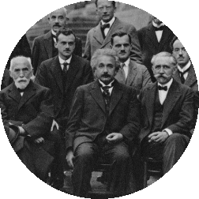

|

|
|
I am/have been organizing or co-organizing of the following international conferences/workshops:
|
On-going/future events:
- COSMO19 (RWTH Aachen University, 2-6 September 2019)
|
Past events:
- CosmoTools18 (RWTH Aachen University, 23-27 April 2018)
- DESY Theory workshop 2017 (DESY, 26-30 September 2017)
- Cosmology after Planck: what is next? (Les Houches, 24-29 April 2016)
- Understanding the Early Universe (CERN Institute, 6-16 January 2015)
- Cosmology and Fundamental Physics with Planck (CERN Institute, 17-28 June 2013)
- Theoretical methods for non-linear cosmology (CERN Institute, 3-7 September 2012)
- Particle Physics and Cosmology 2011 (ppc2011) (CERN, 14-18 June 2011)
- "Journées des Lacs Alpins de Cosmologie", 14 events organised from 2000 to 2010
- COSMO09 (CERN, 7-11 September 2009)
- Particle Cosmology (CERN Institute, 14-18 September 2009)
- Benasque 2008 Workshop on Modern Cosmology
- APC workshop "Dark matter at small scales" in 2008
- Galileo Galilei Institute's "Astroparticle and Cosmology Workshop" in 2006
- Benasque 2006 Workshop on Modern Cosmology
- CERN's CAPP 2003 conference
- LAPTH workshop on the "Ekpyrotic Universe", 2002
|
|